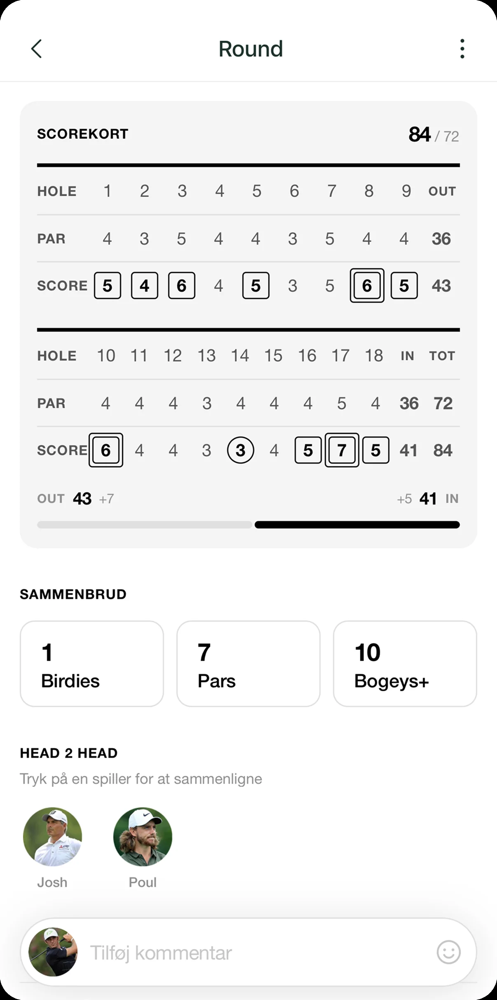

A handicap is not a number you earn once and keep forever. It is alive, and qualifying rounds are what keep it breathing. Every time you play a round that counts, you tell the system something new about how you are actually playing right now. Without qualifying rounds your handicap goes stale, and it ends up describing your past more than your current form. Here is what a qualifying round is, how you register one, and how it lands in your handicap.
What is a qualifying round?
A qualifying round is a round played under the rules of golf and recorded with a marker, so the score can count toward your handicap. It is the difference between a casual round with friends where you are just enjoying the day, and a round you decide up front should count. Two things need to be in place: you play to the rules on a course with a valid rating, and a marker comes along and confirms your score. With both in place, the round is in principle a qualifying round.
It is worth knowing that a qualifying round does not have to be a tournament. An ordinary private round can count, as long as the formalities are in place. That is exactly why most of your handicap typically builds on private rounds rather than big competition days.
The practical steps
The exact procedure varies from club to club, but in many clubs it follows this same basic pattern. Always check with your own club, because procedures are not identical everywhere.
How to register a qualifying round
- Register the round as qualifying before you head out. In many clubs you mark in advance that the round should count, typically in the club system or through the golf terminal. This is the most important detail: the decision is made before the first shot, not afterwards.
- Bring a marker. You play alongside a marker, usually a fellow player, who records your score hole by hole. The marker is there to confirm that the round was played honestly and to the rules.
- Record and approve the score afterwards. When the round is over, you check the scorecard through, and both you and the marker approve it. This is where you jointly confirm the numbers are correct.
- Submit the round. Finally the approved score is submitted to the club or system so it can be processed and feed into your handicap. In many cases this happens digitally on the spot.
The thread running through all four steps is honesty and documentation. A qualifying round only works because everyone trusts the score is accurate, and it is the marker and the approval that carry that trust.
How the round feeds into your WHS handicap
Once a qualifying round is submitted, it is not simply stacked on top of the others. The WHS handicap builds on a core principle: the best 8 of your most recent 20 qualifying rounds. The system looks at your 20 newest scores, takes the best eight, and works out an average from those. That means a single dreadful day does not wreck your handicap, and a single lucky round cannot inflate it artificially. If you want the full mechanics, we have written them out in how the WHS handicap works.
The practical upshot is simple: the more qualifying rounds you play, the more accurate your handicap becomes. The newest rounds slowly push the oldest ones out of the most recent 20, so the number tracks your form rather than getting stuck on how you played a year ago.
Where Golfsocial and DGU come in
The admin side can feel heavy, and the classic annoyance is double entry: you record the score in one place and then have to type it into another place afterwards. That is exactly the friction Golfsocial is built to remove. Through the official integration with the Danish Golf Union your qualifying rounds stay synchronised, so what you register in one place does not have to be entered again somewhere else.
An important caveat: Golfsocial does not issue handicaps, and we do not change the rules. It is the Danish Golf Union that administers your official handicap. Golfsocial’s role is to make registering, sharing, and following along easier, while the handicap itself sits where it belongs, with DGU. Think of it as a layer that removes the hassle, not a layer that replaces the system.
How Golfsocial makes it easy
In the app you enter the round in one place, hole by hole, and then it stays. Including your shot on 12. Especially that one. You log it once, and from there it stays put: the approved score, the marker, the whole round. You don’t have to remember to type the same score into another place afterwards, because Golfsocial keeps it in sync for you.

The sync runs through the official integration with the Danish Golf Union, so your WHS handicap stays up to date without double entry. Golfsocial doesn’t issue the handicap itself; DGU administers it. We just make sure the round you just played lands in the right place without extra hassle.
Final thoughts
A qualifying round is, at heart, just a round you have decided should matter: played to the rules, recorded by a marker, approved, and submitted. Do it regularly and you keep your handicap alive and accurate, and with Golfsocial and the DGU integration most of the admin takes care of itself. Check the details with your own club, bring a marker, and let the rounds count.